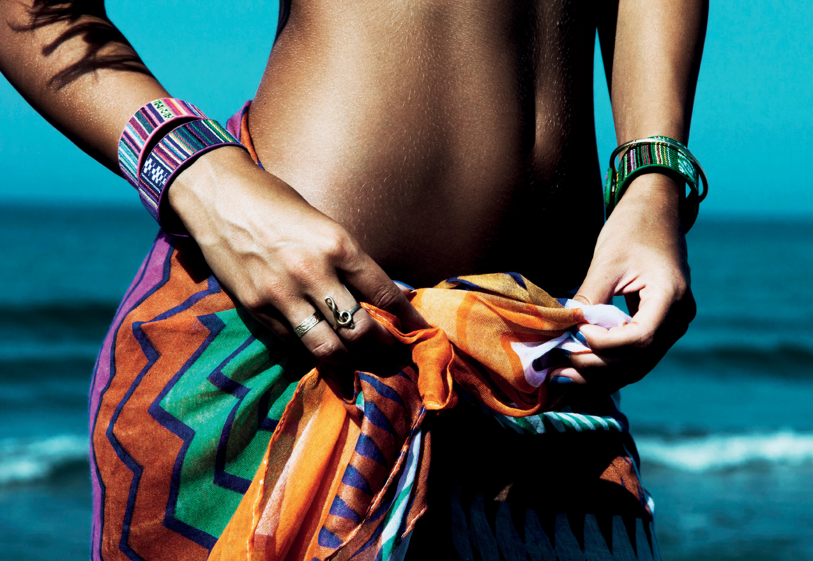
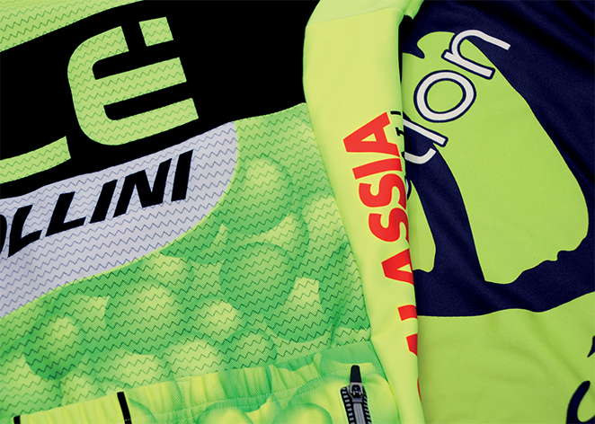
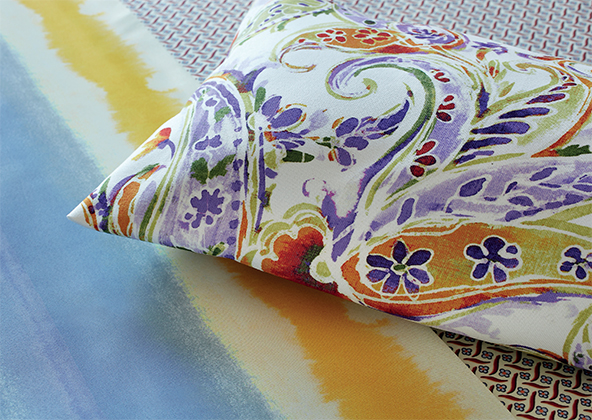
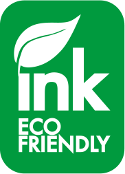

isonik st-e22

о компании
С 1923 года компания ISOCARBO разрабатывает и внедряет инновационные технологические решения для требовательного текстильного сектора.
Благодаря значительному опыту в процессах окрашивания текстиля, а так же традиционной и цифровой печати, компания ISOCARBO производит широкий ассортимент высокотехнологичной продукции, а именно: дисперсные красители, сублимационные красители, реактивные красители, кислотные красители, пигменты и все вспомогательные вещества для предварительно обработки, пропаривания, мытья и финишной обработки.
Isonik ST-E22 - цифровые сублимационные чернила на водной основе для транcферной печати. Продукт подходит для всех печатных машин, работающих на пьезоструйной технологии компании Epson.
Длительные тесты, выполненные на таких принтерах как Epson, Mimaki, Mutoh, Roland показали хорошую совместимость со всеми печатными головами Epson (DX3, DX4, DX5, DX6, DX7, TFP PrecisionCore). Благодаря своим особенностям Isonik ST-E22 отвечает самым высоким требованиям рынка.


{kind=link}
-
Мода
Isocarbo является частью истории итальянской текстильной промышленности. Сегодня компания успешно участвует в цифровых инновациях, поставляя на текстильный рынок сублимационные чернила и оказывая технологическую поддержку.
Благодаря постоянному взаимодействию между лабораторией компании ISOCARBO и конечными клиентами, созданы сублимационные чернила Isonik ST. Несколько формул Isonik ST обеспечивают идеальную комбинацию с любыми бумагами и синтетическими тканями. Серия Isonik ST-E22 имеет обширную и полную цветовую гамму (флуоресцентные цвета, светлые цвета, специальные и индивидуальные цвета), обеспечивает правильный черный цвет для достижения нужной глубины, интенсивности и градаций теней в соответствии с личным вкусом или необходимостью заказчика.
-
спортивная одежда
ISOCARBO закрепила абсолютное лидерство в сфере спортивной одежды и экипировки.
Правильный подбор чернил, сервисная поддержка и взаимодействие с клиентами позволили компании ISOCARBO пройти все тесты (Nike, Converse, Hurley) и получить сертификаты (OEKO-TEX 100, ECOLABEL), необходимые для удовлетворения самых взыскательных запросов, существующих сегодня на рынке. ISOCARBO является надежным партнером в достижении уникальных результатов, благодаря высоким стандартам и инвестициям, которые были сделаны в процессе производства чернил. Новые технологии позволили разработать все более экстремальные и сложные процессы в сублимационной термотрансферной печати.
Эти процессы необходимы для работы с различными секторами в соответствии с самыми современными трехмерными технологиями: от традиционного спортивного трикотажа до ультра легкой специальной одежды, от обуви и аксессуаров, до лыж и других сублимационных поверхностей.
-
домашний текстиль
В основе запросов мебельной промышленности и декорации интерьеров лежит постоянство воспроизведения цвета и абсолютного соответствие с оригинальным рисунком, что компания ISOCARBO рассматривает в качестве своих основных целей.
Цветовое пространство серии ISONIK ST позволяет получать уникальную гамму цветов с точки зрения ширины, яркости и глубины. Таким образом, каждая деталь текстильной мебели точно воспроизводится. Количество цветов, однородность заливки и отсутствие какой-либо неравномерности в печати позволяют воспроизводить любые типы фонов рисунка.
-
Реклама
Благодаря реализации более продвинутых продуктов компания ISOCARBO способствует развитию цифровой печати рекламных носителей.
Спрос на мягкую вывеску (Soft signage) и рекламу на текстиле, постоянно увеличивается. Характеристики чернил должны включать в себя решающие факторы – скорость производства и правильность цветопередачи. Чернила, разработанные в лабораториях ISOCARBO превосходят требуемые стандарты, создавая блестящие, стабильные и устойчивые к погодным условиям цвета, характеризующиеся отличным двухсторонним качеством.
Тесное сотрудничество с нашими клиентами является ключевым фактором для улучшения и индустриализации процесса производства печатной продукции, как с использованием сублимационной бумаги так и непосредственно прямой печати на ткани.
Забота об экологии
Изделия Isonik ST не содержат тяжелых металлов, растворителей и других токсичных/опасных веществ в соответствии с европейским законодательством и экологическими требованиями международных стандартов.
- 
Сублимационные чернила Isonik ST-E22 соответствуют стандарту OEKO-TEX 100
Контакты
- Москва, Мукомольный пр-д, 4А стр.2, офис 505
- +7 (499) 259 54 01
- ale@t-textile.com
- График работы:
Понедельник — Пятница, 9:30 – 18:30